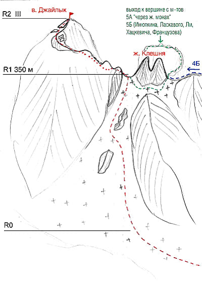

Маршруты
Адырсу: в. ВИА-тау (2А и 2Б)
Виатау по Южному гребню 2Б,
Виатау по Северному гребню 2А

Описание маршрута 2Б
От альплагеря "Уллутау" перейти по мосту р. Адырсу и мимо коша двигаться в сторону "острова". Перейдя систему ручьев (напротив Старого Джайлыка), свернуть налево на крутую тропу уходящую мимо водопада вверх. По тропе доходите до ночевок, расположенных перед левобережной мореной ледника. От лагеря 1,5-2 часа. 1. От ночевок доходите по тропе до конца морены и, траверсировав фирновые склоны Койавгана, выходите на ледник. Прямо перед вами массив Виатау без явно выраженной вершины. Слева от вершины вы увидите явно выраженный жандарм Узловой, через который проходит маршрут 2б. 2. Сворачиваете налево и движетесь по леднику в сторону самого низкого провала в гребне, идущем от Узлового жандарма. Поднявшись в провал, поворачиваете направо в сторону жандарма. Движетесь по простым тропам слева от гребня, затем переходите направо на снежник. По нему выходите на скалы и по простым полкам подходите к основанию жандарма. Жандарм обходится слева и сзади. 3. Обойдя жандарм, выходите направо на Южный гребень вершины Виатау. Движетесь вначале по гребню, затем слева от него по простым полкам, пока не увидите справа наверху большие скальные ворота. Подымаетесь по скалам средней сложности на гребень перед "воротами". Проходите внутри "ворот" и сразу за ними ключевое место маршрута - острый 2-3метровый скальный гребешок, который легко пройти, сев на него верхом. Есть искушение обойти гребешок справа по полкам, но выход там более стремный. 4. Далее движетесь по гребню до предвершинного взлета. По крутым скалам средней трудности предвершинного взлета 50м выходите на простую широкую часть гребня ведущую к вершине Виатау.От ночевок 5-6 часов. Спуск по 2а.
Описание маршрута 2А
1. На леднике сворачиваете направо и движетесь в сторону перевала Койавган. По крутому снежно-фирновому (в августе осыпному) взлету подымаетесь на перевал слева от снежного карниза на перевале. 2. На перевале сворачиваете налево и вначале по немного разрушенным, а затем по монолитным скалам гребня подымаетесь на в. Виатау. От ночевок 4-5 часов
Адырсу: Джайлык 4А
Джайлык по Северному склону Западного гребня, 4А, комб.
ОПИСАНИЕ МАРШРУТА R0. От "Черных скал" гребня вершины Джайлык подъем по пологому, затем по крутому ледово-снежному 400-500 метровому склону северной (левой по ходу) стороны Западного гребня вершины Джайлык. R1. Вначале подъем по правой части ледового склона до двух скальных островов посередине склона. Затем траверс влево между скальными островами и подъем прямо вверх до перемычки Западного гребня слева от жандарма "Клешня". R2. На перемычке повернуть налево и двигаться сначала по полкам с правой стороны скального гебня, затем подъем на гребень и выход на вершину Джайлык.
Адырсу: Койавган по Северо-западному леднику 3Б
Койавган по Северо-Зап. леднику, 3Б к.тр., маршрут Рудольфа Ефимова

ОПИСАНИЕ МАРШРУТА Ночевка под мореной, ведущей на Джаловчатские ночевки. Нижнюю часть ледника до бараньего лба необходимо пройти до 9-00, т.к. после 9 утра сыпят камни. 1. До бараньего лба 3 веревки (по 50м). Крутизна 45гр. (при прохождении бергшрунда - страховка) 2. бараний лоб 1 веревка под язык ледника (страховка - закладки, крючья). 3. Выход на язык ледника, 1 веревка, крутизна 60-70 град. (страховка - ледобуры). 4. Вверх по леднику, 8 веревок, крутизна 50-60 град. (страховка - ледобуры). 5. Далее 7 веревок по снегу до выхода на гребень, крутизна снежника 45-50 град. (страховка через ледоруб). 6. Перед выходом на гребень бергшрунд, который переходится по мосту. Тщательная страховка при преодолении бергшрунда!!! 7. По гребню до вершины движение одновременное. Страховка через выступы. гребень сильно разрушен, живые камни. По гребню до вершины 1 час. 8. Спуск с вершины на перевал Койавган по полкам (1 час). Склон сыпучий, живые камни. Необходимое снаряжение для двойки: ледобуры - 5 шт. кручья ск. - 3-5 шт. карабины, оттяжки кошки ледовый инструмент палатка газоаая горелка Маршрут можно пройти из лагеря в лагерь, но лучше с бивуака.